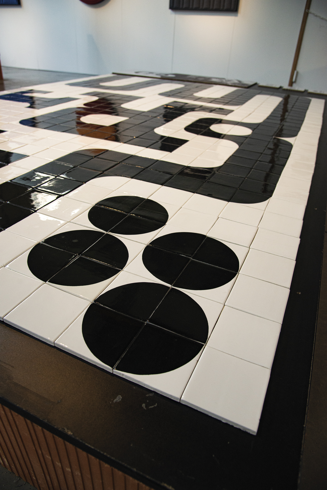

En collaboration avec l'entreprise les Céramiques du Beaujolais
Visuel exposé lors de la 12ème Biennale Internationale Design de Saint-Étienne, au sein de l'exposition FabÉcole. Proposition d'un carrelage typographique réalisé par l'assemblage de 4 carreaux de carrelage différents.